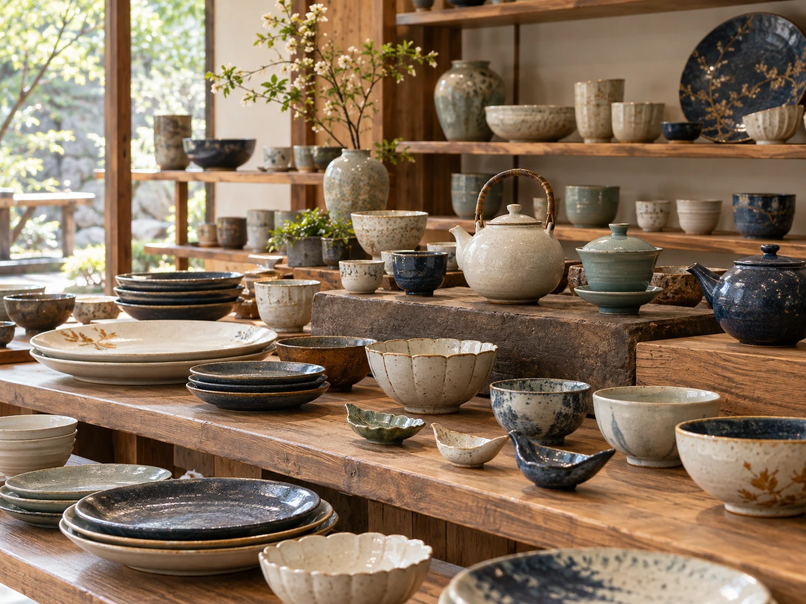

CONCEPT
器を売るお店の、
器を使う部屋です
ティールーム陶は、秋田市中通の「食器のさかいだ」の2階にあります。 1階は、日常の食器や贈り物の器を売るお店です。
お気に入りの「一杯の相棒」を見つけてください
食器のさかいだの公式Instagramにあった言葉です。酒器を紹介する投稿でしたが、2階の喫茶室にも、そのまま当てはまると思いました。
取引のあるメーカーは100社あまり。「どんな器でもおさがし致します」と、お店は案内しています。 その器のお店が、器を使う場所として持っているのが、この喫茶室です。
来店された方は、こう書かれていました。
使われてる食器がすごくかわいいので、コーヒーを飲むためだけに来るにもいいお店です。 公開されている来店者の感想より
器で飲む。器で炊く。器を直す。 器のことが、この建物の中でひと通りそろっています。
